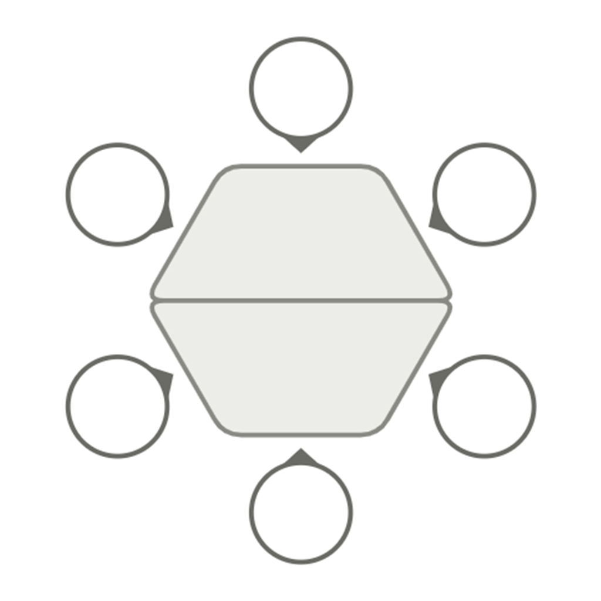

会議室レイアウター ―
机と椅子で、理想の会議室をつくる
2026年7月25日

会議室のレイアウトには、正解がない
会議室に机と椅子をどう並べるか。実は、これといった正解がありません。
詰めて並べれば席数は稼げますが、人が通りにくくなります。ゆったり配置すれば歩きやすくなる代わりに、話しづらくなったり、席が余ったりします。あちらを立てればこちらが立たず——そのトレードオフを、指標という形で見えるようにしたのがこのアプリです。
正解がないので、ゴールもクリアもありません。自分がいいと思うレイアウトを、ただ追い求めていく一作です。
遊び方
- 机と椅子を置く … 盤面に机と椅子を配置して、会議室をレイアウトしていきます。
- 評価を見る … レイアウトは5つの指標で自動的に採点されます。
- コメントをもらう … レイアウター岡村が、いまの会議室にひとことコメントをくれます。
できあがった会議室には名前を付けることもできます。時間制限も、失敗もありません。気の済むまで並べ替えてください。
5つの評価指標
| 歩きやすさ | 人が通れる動線が確保されているか。詰め込みすぎると下がります。 |
|---|---|
| 話しやすさ | 参加者どうしの距離や向きが、会話に向いているか。 |
| 座席効率 | スペースを無駄なく、多くの人が座れているか。 |
| 作業しやすさ | 机まわりに、書いたり作業したりする余裕があるか。 |
| 独創性 | 机の並びを1つの図形として見たときの、輪郭の面白さ。 |
歩きやすさと座席効率のように、片方を上げると片方が下がる指標があります。すべてを同時に満点にするのは簡単ではありません。
岡村のひとこと
レイアウトの出来に応じて、レイアウター岡村が会議室を評価してくれます。コメントは全部で32パターン。「最悪の会議室だね。」から、5つの指標がそろった「伝説の会議室」まで用意されています。
そして、ある条件を満たした会議室にたどり着くと——レイアウトを超えた何かに気づく、ちょっとした演出が待っています。ぜひ自分の手で見つけてみてください。
ゆるく、あるいは極めて
適当に並べて岡村のコメントを眺めるだけでも、指標を全部そろえる「伝説の会議室」を本気で狙うのでも、遊び方は自由です。登録もインストールも不要、ブラウザから無料で遊べます。